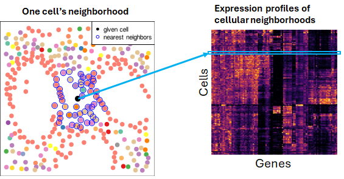

Patrick Danaher ![]()
1 Introduction
The literature is becoming crowded with analysis tools employing elaborate techniques (graphical neural networks, Fourier transforms, hidden Markov random fields) to solve straightforward problems (e.g. spatial clustering or seeking spatially auto-correlated genes). While these methods promise more optimal performance, simpler techniques have a different virtue: they make analyses easier to understand, both for analysts and for their eventual audiences. In this spirit, we recommend “cellular neighborhoods” as an framework for diverse analyses. This approach is easy to implement, straightforward to riff on, and computationally efficient
Cellular neighborhood analysis begins with two steps:
- Define each cell’s neighboring cells.
- Create a new matrix encoding cells’ “spatial contexts”. To do this, we compute summaries of each cell’s neighbors, reporting for example their average expression profile or the abundance of different cell types within them.
Once we’ve obtained a matrix of spatial context data, myriad analyses become possible. We can:
- Plot spatially smoothed expression to make spatial expression patterns for visually clear
- Derive spatial clusters / niches
- Find spatially auto-correlated genes / sets of genes
- Set up interesting differential expression problems, asking how cells modulate expression in response to their spatial context
- Explore ligand-receptor interactions
Many of these analyses are achieved by simply applying techniques from single cell analyses, for example clustering the rows (cells) or columns (genes) of the matrix.
2 Tools for analyzing cellular neighborhoods:
A small R package implementing the building blocks of cellular neighborhood analysis is here.
To install it:
devtools::install_github("https://github.com/Nanostring-Biostats/CosMx-Analysis-Scratch-Space/tree/Main/_code/cellular-neighborhoods")To set up our examples, let’s load the package and open its data:
library(CellularNeighborhoods)
data(cosmx_kidney)
annot <- cosmx_kidney$annot
rownames(annot) <- annot$cell_ID
counts <- cosmx_kidney$counts
celltype <- as.factor(cosmx_kidney$annot$celltype)
xy <- cosmx_kidney$xyNow we’re ready to demonstrate the basics:
2.1 Defining a cell’s neighbors
Convenient approaches to define a cell’s neighbors include the “K-nearest” approach (we usually use the nearest 50 neighbors) and a radius-based approach. We prefer the K-nearest neighbors approach, mainly because radius-based neighborhoods tend to vary widely in the number of cells they contain, and neighborhoods of very few cells are statistically unstable.
The size of a neighborhood is up to the analyst’s discretion. Try to choose a neighborhood size that reflects your understanding of biology and that makes sense for your biological question. There is a Goldilocks zone, however: very small neighborhoods produce sparse and noisy data, and very large neighborhoods become inaccurate representations of a cell’s 3D surroundings. (The problem with large neighborhoods: the area of your circular neighborhood increases with the square of the radius, but the volume of the corresponding (unobserved) 3D tissue region increases with the cube of the radius. This means that the larger the radius, the less of your 3D neighborhood falls in the narrow tissue slide you’ve assayed, and the more it consists of unseen cells increasingly far away in the Z-dimension.)
Here’s code for defining cellular neighborhoods:
# define neighbors using a K-nearest approach:
neighbors.nearest50 <- nearestNeighborGraph(x = xy[, 1], y = xy[, 2], N = 50)
# define using a radius-based approach:
neighbors.radiusbased <- radiusBasedGraph(x = xy[, 1], y = xy[, 2], R = 0.05)
# the output is a sparse matrix of cells * cells:
str(neighbors.nearest50)Formal class 'dgCMatrix' [package "Matrix"] with 6 slots
..@ i : int [1:327750] 1 22 30 40 54 59 62 63 73 78 ...
..@ p : int [1:6556] 0 29 60 89 114 141 181 207 239 276 ...
..@ Dim : int [1:2] 6555 6555
..@ Dimnames:List of 2
.. ..$ : NULL
.. ..$ : NULL
..@ x : num [1:327750] 0.0603 0.0405 0.0135 0.0379 0.0179 ...
..@ factors : list()# compare the number of neighbors found by each approach:
summary(Matrix::rowSums(neighbors.nearest50)) Min. 1st Qu. Median Mean 3rd Qu. Max.
1.230 1.595 1.742 1.784 1.927 5.360 summary(Matrix::rowSums(neighbors.radiusbased)) Min. 1st Qu. Median Mean 3rd Qu. Max.
0.000 1.234 1.514 1.512 1.781 2.772 2.1.1 Subsampling neighbors to minimize spatial auto-correlation
An occasionally important detail:
In “Mitigating autocorrelation during spatially resolved transcriptomics data analysis” (bioRvix), Maher et al. describe an inconvenient tendency of spatial context matrices: because neighboring cells have largely the same neighbors, their entries in the spatial context matrix are correlated. This correlation between neighbors proves a substantial barrier to distance-based analyses like UMAP or Leiden clustering, producing UMAPs where all points fall in a highly-connected blob and generally poor Leiden performance. (However, for most analyses, correlation between neighboring cells’ spatial context vectors doesn’t seem to have much impact.) They propose that by defining each cell’s neighborhood as a random subset of its nearest neighbors, they can largely break this correlation between neighbors. They released a python toolkit for this, SPIN.
For R coders, here’s how you would get a neighborhood matrix with random subsetting:
subsetted_neighbors <- subsampleNeighborsByRow(neighbors = neighbors.nearest50, p = 0.5)
summary(Matrix::rowSums(subsetted_neighbors)) Min. 1st Qu. Median Mean 3rd Qu. Max.
0.5717 0.7919 0.8724 0.8931 0.9709 2.7387 2.2 Summarizing a cell’s neighbors to define its spatial context
Usually, you’ll employ one of two approaches:
- Report the average expression of neighborhood cells
- Report the cell type abundances within the neighborhood cells
But more bespoke options are possible. For example, you could:
- Only record expression of known ligands, under the theory that they’re mainly responsible for cell-cell communication.
- Only record genes from a pathway of interest
- Record QC metrics like the rate of flagged cells, or total counts per cell, or total negprobe counts per cell.
- Create a hybrid matrix including both cell type abundances and expression of selected genes.
- Instead of computing means, look at SD or covariance of gene expression within a neighborhood.
The main takeaway here is that once you’ve defined cellular neighborhoods, it’s incredibly simply to extract all manner of variables from them, giving you great flexibility in how you pose biological questions.
You can implement the basic formats of spatial context matrices as follows:
# mean neighborhood expression:
spatialcontext_expression <- get_neighborhood_expression(counts, neighbors.nearest50)
# mean cell type abundances:
spatialcontext_celltypes <- neighbor_tabulate(annot$celltype, neighbors.nearest50)
# spatial context matrices are dense:
str(spatialcontext_expression) num [1:6555, 1:11] 0.16 0.24 0.4 0.28 0.22 0.4 0.32 0.38 0.28 0.34 ...
- attr(*, "dimnames")=List of 2
..$ : NULL
..$ : chr [1:11] "ITGAV" "ITGA3" "SPOCK2" "SPP1" ...str(spatialcontext_celltypes) num [1:6555, 1:26] 24 34 17 36 29 11 36 35 19 39 ...
- attr(*, "dimnames")=List of 2
..$ : NULL
..$ : chr [1:26] "PCT" "Parietal.epithelium" "Connecting.tubule" "Type.B.intercalated.cell" ...3 Analyzing the spatial context matrix:
Now that we’ve got a spatial context matrix, we can play all our usual matrix analysis games with it. Brief descriptions follow:
3.0.1 Visualization
Plotting genes’ values in the spatial context matrix, rather than their single cell expression values, often produces smoother, cleaner representations of their spatial patterns.
3.0.2 Spatial clustering / niche analysis
This is an exercise in clustering the rows (cells) of the spatial context matrix. The Mclust library works well here. If you use subsetted neighbors (via the function), then Louvain and Leiden clustering will also work.
3.0.3 UMAPs:
Two approaches lead to informative UMAP projections of spatial context matrices:
- Use to squash autocorrelation.
- Simply plot a UMAP of a random subset of cells.
3.0.4 Clustering genes:
To find sets of genes that are correlated with each other in space, we recommend the InSituCor library, which applies many of the functions shown here and implements other insights to get more informative results.
3.0.5 Evaluating single genes for spatial autocorrelation:
Lots of well-considered packages are available for this task, though cellular neighborhoods can also be used. Simply take the correlation between a gene’s (normalized) single cell expression and its mean expression across cellular neighborhoods, i.e. its column in the spatial context matrix.
3.0.6 Differential expression
Spatial context variables, for example abundance of a cell type of interest or expression of a gene of interest, are well-suited for use as predictors in differential expression analysis. For example, you might model how tumor cell gene expression changes in response to the number of neighboring T-cells, or to neighborhood expression of interferon gamma.
3.0.7 Ligand-receptor analysis:
The cellular neighborhood framework lets us examine ligand-receptor interactions in a variety of ways:
- We can score cellular neighborhoods for concurrent expression of a LR pair
- We can study whether a LR pair tends to be expressed in the same neighborhoods. (Again, InSituCor is well-crafted for this task.)
- You might reasonably just look at a ligand’s neighborhood expression levels as indicative of the LR signaling cells are subject to. (You might do this if the single cell expression of the Receptor gene is problematically noisy, or if you’re willing to assume that all the cells you’re analyzing have at least some receptor, and the biologically interesting question is how much ligand they’re exposed to.)
4 Recommendation: spatial clustering / niche analysis
“Niche analysis” is the task of classifying cellular neighborhoods, usually via cluster analysis. Anecdotally, scientists seem to be making very effective use of this technique. Spatial transcriptomics data is complex, and it’s a convenient simplification to say things like, “We found a T-cell-enriched niche”, or, “This niche is more common in higher-grade disease”. This technique is particularly useful in large studies, where much of analysis focuses on tissue-level attributes. In this setting, it’s very convenient to summarize tissues with their relative abundances of different niches.
5 Computational considerations
Single cell expression data is sparse, and so can be stored in sparse matrix format for huge memory savings. But a spatial context matrix reporting average neighborhood expression is dense, and for larger datasets can overwhelm even generously-allotted memory. We recommend two countermeasures:
- Subsetting: many analyses don’t need to use every cell in a dataset: taking results from just thousands or tens of thousands of cells produces sufficiently stable summary statistics. InSituCor, for example, defaults to calculating spatial context matrix for just a subset of 5000 cells.
Here’s how you would get a spatial context for a subset:
sub <- sample(1:nrow(counts), 1000)
subsampled_spatialcontext <- get_neighborhood_expression(
counts = counts,
neighbors = neighbors.nearest50[sub, ])- On-the-fly calculations: it’s computationally quick to compute things like mean neighborhood expression or mean neighborhood cell type abundance. Rather than storing these matrices, calculate them anew every time you need them.
Blog - Cellular neighborhoods: a useful and straightforward analysis framework Blog - Cellular neighborhoods: a useful and straightforward analysis framework Blog - Cellular neighborhoods: a useful and straightforward analysis framework Blog An introduction to “cellular neighborhoods” and their many uses in analysis. An introduction to “cellular neighborhoods” and their many uses in analysis.